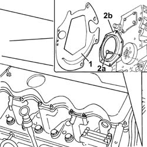

1020D28 FLYWHEEL SIDE OIL SEAL COVER - R+R FOR VERSIONS WITH AIR CONDITIONER
- Path
- Procedures > 10 ENGINE UNIT > 1020 CRANKCASE SUMP AND COVERS > 1020D OIL SEALS ON CRANK SHAFT > 1020D28 FLYWHEEL SIDE OIL SEAL COVER - R+R FOR VERSIONS WITH AIR CONDITIONER
- Kind
- repair procedure (removal / refitting; the operation number is the code)
- Applies to
- engines: 2.8 JTD 8V; all production periods
- Interactive page
- https://sloeber94.github.io/elrnDB-fDct/en/#/244000668
Applies to: engines: 2.8 JTD 8V; all production periods
 Removing
Removing
 Refitting
RefittingOp. 7055B54 UNDER-ENGINE GUARD - R R
Op. 2110A10 MANUAL GEARBOX AND DIFFERENTIAL - R + R
Op. 1810A24 CLUTCH - R + R WITH GEARBOX REMOVED
See in Op. 1024B22
-
1. Remove the protective cover.
2. Undo the fixing bolts (2a) and remove the flywheel side oil seal cover.

Applies to: engines: 2.8 JTD 8V; all production periods
Refitting
Removing- Fit the flywheel side cover with the oil seal incorporated in place.
- Tighten the fixing bolts and check the torque.
 | Value - daNm | Fastening | Component | Ø |
|---|---|---|---|---|
. | (engine crankcase side) 2.5 | Bolt | REAR COVER CRANKSHAFT | M8 |
- Fit the protective cover.
See in Op. 1024B22
Op. 1810A24 CLUTCH - R + R WITH GEARBOX REMOVED